SVC Seoul AI 해커톤 · 트랙3 효도여행
반걸음
부모님 일정이 무리인지, 출발 전에 알 수 있게
남재은관광지 난이도 평가 · HITL
이지원일정 엔진 · 체력 상한 기준
노희윤식당 · UI
김천지기획 · UI 통합 · 카드
심사: 발표 완성도(팀 협업). 역할은 실제 PR 기준으로 최종 확인.
01문제
효도여행에서 가장 먼저 막히는 질문은
"이 일정, 부모님께 무리일까?"입니다
그런데 이 질문에 답할 기준이 자녀에게도, 여행사에도 없습니다.
일정을 정하는 사람
71.4%
고령자가 여행 정보를 가족·친구에게서 얻는 비율
경기연구원, 2024 (고령자 238명)
여행의 기본값
63.3%
60대가 패키지 여행을 선택하는 비율
오픈서베이, 2025
가장 큰 불편
23.1%
고령자 관광지 불편 1위 — 경사·계단 등 이동 환경
경기연구원, 2024
말할 것: 트랙 "효도여행"은 카테고리이고, 그 안에서 우리가 푼 문제는 "무리인지 판단할 기준이 없다"(이도경 멘토 P·M). 판단 기준은 나이가 아니라 가족 중 가장 체력이 약한 사람. 출처: docs/presentation/day1/pitch.md ①
01문제 · 현장의 목소리
현장에서도 부담은 사람의 경험에 맡겨져 있었습니다
멘토 1
MD는 하루 안에 이 코스가 다 돌아지는지를 보며, 개별 여행자는 고려하지 않는다고 했습니다.
멘토 2
일정 배치는 결국 가이드의 역량에 달려 있다고 했습니다.
멘토 3
플레이스 정보를 써도 동선이 동떨어지거나 겹쳐서 현실성이 없는 경우가 많다고 했습니다.
멘토 4
피로도를 어떻게 측정할지가 아직 너무 피상적이라고 했습니다.
해석(말로): ① 상품에 개인 부담 정보가 없다 ② 공통 기준이 없다 ③ 데이터가 있어도 소화 가능한 일정은 보장 안 된다 ④ 근거 있는 수치가 없다. 노션 초록 하이라이트 H·A·B·C·D·E. ①은 화자 표기 불명확 → 멘토 1로 표기. 보조: 패키지도 하루 2~3만 보(주최측).
01문제 · 원인
원인은 하나입니다.
관광지가 얼마나 힘든지 공통 수치로 만든 기준표가 없습니다
| 지금 쓰는 방법 | 보여 주는 것 | 빠진 것 |
|---|
| 패키지 일정표 | 관광지 사이 차량 시간 | 관광지 안에서 걷는 양 |
| 여행 플래너 · 지도 | 장소를 잇는 선 | 피로가 쌓이는 순서 |
| AI 여행 챗봇 | "부모님과 함께"라는 문장 | 근거와 같은 결과의 반복 |
왜 아직 안 풀렸나
여행사도 필요성은 알지만 더 큰 사업에 밀려 우선순위가 낮고, 관광지 피로도에 대한 공식 데이터도 부족합니다.
멘토님
멘토: G·N. 출처: pitch.md ② 비교표 축약.
02해결 · 관광지 난이도
관광지마다 부담을 1~10점과 상·중·하로 매겼습니다
계단·오르막 3 · 걷는 양 3 · 더위 2 · 혼잡 1의 가중평균. 하 1~3 · 중 4~5 · 상 6 이상.
| 다낭 15곳 | 점수 |
|---|
| 상바나힐 · 오행산 | 6 |
| 중미선 유적지 | 5 |
| 중호이안 구시가지 · 누이탄타이 · 영흥사 · 아시아파크 · 미케 해변 | 4 |
| 하한시장 · 하이반 고개 · 호이안 야시장 · 용다리 · 껌탄 | 3 |
| 하다낭 대성당 · 참 조각 박물관 | 2 |
같은 오행산도 보는 방식에 따라 다릅니다
| 엘리베이터 · 사원 일부 | 중5 |
| 일반 관람 | 상6 |
| 계단으로 정상까지 | 상7 |
빼는 대신 보는 방식을 바꾸는 선택지가 생깁니다.
심사: 창의성 — 일정을 새로 만드는 게 아니라 만들어진 일정의 부담을 검증. 멘토: E·G·O. 코드: src/scoring/verify.py, data/scoring/scores_v2.json (일반 관람 점수).
02해결 · 근거 수집
점수의 재료는 다섯 가지 출처에서 모은 근거 523건입니다
| 출처 | | 어떻게 모으나 | | 어떻게 정리하나 | 저장 |
|---|
| GPS 궤적 | → | OpenStreetMap 공개 궤적 + Open-Meteo 고도 | → | 관광지 구역만 잘라 거리·시간·오르막 중앙값 | 36 건 |
| 지도 (OSM) | → | 반경 300m 지도 데이터 조회 | → | 보행로 길이 · 계단 · 벤치 · 화장실 수 | 35 건 |
| Tripadvisor | → | 13곳 × 약 150건 리뷰 | → | 계단·더위·혼잡 언급 비율 (95% 신뢰구간) | 104 건 |
| Google 지도 | → | 장소 정보 · 리뷰 주제 · 리뷰 (장소당 5건) | → | 주제 키워드를 네 기준에 배정 | 250 건 |
| 기후 | → | Open-Meteo 과거 기상 | → | 다낭 월별 최고 체감온도 평균 | 12 건 |
| 초기 조사 | → | 운영사 공식 정보 · 조사 사실 | → | 출처 URL과 한계 메모를 함께 저장 | 86 건 |
모든 근거에
고정 ID기준 배정 (오르막 · 보행 · 더위 · 혼잡)출처 등급 A · B · C한계 메모
리뷰 원문 1,994건 별도 저장
말할 것: 멘토 "그 정보를 어디서 구하나"(B·E)에 대한 답. GPS 궤적·OSM·Tripadvisor·Google·기후 5개 출처 → 근거 523건(출처 등급 A·B·C), 리뷰 1,994건. 관광지별 사실(계단 수·엘리베이터 운행)은 시기마다 달라 채점 때 웹으로 확인. 출처: docs/scoring-ai/assets/workflow_1_evidence.png, README §3-1.
02해결 · AI 채점과 검증
AI가 근거를 읽고 채점하면, 코드가 그 인용을 검증합니다
재료근거 DB · 웹
근거 523건과 리뷰를 도구로 조회. 계단 수·엘리베이터 운행처럼 자주 바뀌는 사실은 웹에서 확인
AIClaude 채점
네 기준을 각각 1~10점으로, 보통 · 가장 쉬운 · 가장 힘든 경우까지. 점수마다 근거 ID를 붙임
코드인용 검증
붙인 근거가 실제로 있는지, 숫자가 맞는지 대조
틀리면 그 점수는 무효
코드집계
필요할 때만 최대 3번 채점해 가운데 결과를 채택. 가중평균 → 상 · 중 · 하 + 주의 태그
흔들리면 사람 검수실제: 15곳 중 1곳(한시장)
결과관람 방식별 점수
패키지 난이도 계산 · 일정 엔진 · 화면에서 그대로 사용
8/15곳
검증 없이 AI끼리 등급이 일치한 비율 — 그래서 검증이 필요합니다
왜 AI: 관광지 범위·실제 관람 경로(정상까지 안 갈 수도, 케이블카가 대신)는 규칙으로 판단 불가. 왜 검증: LLM끼리도 등급 8/15만 일치. 인용한 근거가 없거나 수치가 다르면 무효, 필요할 때만 최대 3회 → 15곳 중 14곳 통과, 한시장 1곳 사람 검수 대기. 멘토: G. 출처: README §2·§3, 그림은 score-display 9c5719a(새 등급 기준).
02해결 · 하루 부담
하루 부담은 두 가지로 봅니다.
힘든 곳이 몰렸는지, 그리고 그 사람에게 많은지
배치 규칙 · 엔진에서 동작
그날 가장 높은 점수 + 6점 이상이 연달아 붙을 때마다 +1. 상한 7을 넘으면 가장 힘든 곳부터 짧은 관람으로 바꿉니다.
| 바나힐 6 → 오행산 계단 정상 7 | 7 + 1 = 8 |
| 오행산을 엘리베이터 코스로 | 6 |
사람 체력 상한 · 기준 수립 (엔진은 별도 예산)
하루 관광지 점수의 합계가 연령별 상한을 넘지 않게 합니다.
| 20~40대 | 50대 | 60대 | 70대 | 80세 이상 |
|---|
| 14 | 12 | 11 | 10 | 8 |
오행산 + 영흥사 + 미케 해변 = 14 → 30대는 가능, 70대는 초과
엔진이 지금 쓰는 값은 이 표가 아니라, 보행 지속시간으로 정한 하루 피로 예산 9~17점(75세 이상 −1 등)입니다. 근거 없는 가정값이며 이 표와는 연결돼 있지 않습니다.
14 × 연령별 보행 능력 비율 · 한국 성인 612명 보행 연구, 세션 RPE, 젖산역치 연구
멘토: E·G. 코드: src/scoring/package_difficulty.py, src/planner/engine.py(max_day_difficulty=7). 연속 6점 이상 쌍마다 +1은 보너스 최대 +2, 합친 값이 7을 넘으면 가장 힘든 곳부터 짧은 관람으로 변경. 체력 상한은 이지원 노션 — 엔진은 연령별 상한이 아니라 config.json fatigue 예산(9~17, 가정값)을 하드 제약으로 사용 — 둘이 연동돼 있다고 말하지 않기. 예상 질문: 논문은 강도×시간 → 다음 단계 체류 시간 가중.
02해결 · 동선과 사람의 확인
동선은 규칙이 짜고, 현실과 다르면 사람이 고칩니다
| 단계 | 핵심 규칙 |
|---|
| 조건 합치기 | 가장 느린 사람 · 가장 짧은 보행 한도 |
| 하루 구성 | 하루에 묶을 관광지와 식당을 함께 정함. 최대 3곳, 점수 합 ≤ 피로 예산 9~17 |
| 관람 방식 | 일반 · 짧게 (전체는 직접 선택), 하루 난이도 상한 7 |
| 시간표 | 영업시간 · 휴무, 연속 보행 한도 후 25분 휴식, 꼭 갈 곳 유지 |
| 식사 · 빈 시간 | 하루 2끼(저녁 17:30~), 30분 이상 비면 체류 연장 → "자유 시간" |
전에는 권역별로 묶은 뒤 식당을 나중에 붙였고, 지금은 피로 예산 안에서 관광지와 식당을 한 번에 정합니다. AI는 요청을 수정 명령 9개 중 하나로 바꾸기만 하며, 바뀐 일정은 승인해야 반영됩니다.
1일차난이도 6
도보 합계 83분 · 연속 최대 40분
택시 10분
09:10–10:10용다리
택시 17분
10:27–12:27오행산(마블마운틴)
도보 8분
12:35점심 · Hung68
13:35–14:46자유 시간 · 숙소 휴식 71분
택시 14분
15:00–17:00아시아파크(썬휠)
택시 10분
17:30저녁 · 두끼 다낭 2 thang 9 (2호점) dookki danang 2thang9한식
택시 10분
2일차난이도 4
도보 합계 55분 · 연속 최대 39분
택시 53분
09:53–14:53호이안 구시가지점심 전·후
12:00점심 · MẸT Hội An - Vietnamese cuisine & Vegetarian options 7
택시 52분
15:45–16:45참 조각 박물관
택시 10분
16:55–17:55한시장
17:55저녁 · 피자 4P's 다낭 인도차이나점
3일차난이도 4
도보 합계 35분 · 연속 최대 25분
택시 39분
09:39–10:39하이반 고개
택시 42분
11:21–13:21영흥사(린응사, 손짜반도)
택시 10분
13:31점심 · Son Tra Retreat
택시 13분
14:44–16:14다낭 대성당(핑크성당)
16:14–17:30자유 시간 · 숙소 휴식 76분
17:30저녁 · 복짬뽕한식
일정 엔진 실행 결과 · 식당은 데모 데이터 · 이동시간은 직선거리 추정
멘토: F("이런 문제는 이렇게 해결하겠다") · D · 노션 "동선 로직 설명". 출처: route_planner.md §3-2(하루 구성)·§3-3, src/planner/compose.py, config.json(fatigue·free_time). 참고 아티팩트(엔진 설계 페이지)와 route_planner.md 일치 확인. 비용 함수=이동 분+0.5×대기 분+식당 점수 차이×10+날 사이 장소 수 차이×30+빈 날 800 등 가중치도 팀 가정값. 표의 단계 구분은 발표용 단순화: 실제로는 관람 방식 조정(일반↔짧게)이 하루 구성 안에서 피로 예산에 맞춰 일어나고, 방문 순서와 식당 확정은 시간표 시뮬레이션이 다시 정함. 72건 합성 시나리오 비교이며 외부 검증은 아직 없음(한식 조건 충족 64/72, 계산 평균 0.35초·최대 2초). 피로 예산(9~17, 75세 이상 −1)·하루 최대 3곳·체류 범위는 근거 없는 가정값 — 8장 연령별 상한(14/12/11/10/8)과는 다른 값이며 서로 연동되지 않음. 날짜 배정이 쏠리던 문제는 해결(장소 수 차이 2 이상 30건→1건, 72건 비교), 빈 시간은 줄인 게 아니라 자유 시간 칸으로 표시(평균 10.7시간, 3일 기준).
02해결 · 사람의 확인 (HITL)
현실과 다르면 사람이 말하고, AI가 확인하고, 사람이 승인합니다
하나투어 MD관광지 점수를 고칠 때
사람의견 입력
"오행산 엘리베이터 점검이 잦아요"
→
AI웹으로 확인 · 재채점
의견은 근거 1건으로만 취급, 최근 리뷰·웹과 비교
→
사람MD 승인
전후 등급과 근거를 보고 승인해야 반영
실제 결과
최근 리뷰상 정상 운행 → 보통 점수 유지, 운휴는 최악 조건에만 반영
1회 약 $0.065 · 그 관광지가 들어간 모든 상품에 적용
자녀 · 부모님내 여행 일정을 고칠 때
→
AI일정 다시 짜기
말을 수정 명령으로 바꾸고, 엔진이 새 일정 계산
→
사람자녀 승인
바뀐 점을 미리 보고, 승인 전엔 그대로
예시
오행산 일반 관람 → 엘리베이터 코스, 하루 난이도 전후 비교
1회 $0.0003~0.0006 · 버튼은 0원 · 그 여행만 바뀜
AI는 사람의 말을 그대로 믿지 않고, 사람은 AI의 결과를 확인한 뒤에만 반영합니다.
멘토: F("현실과 안 맞을 때 어떻게 처리하나"). MD 재채점은 effort medium, 오행산 실측 약 $0.065(≈90원). 가족 쪽은 Haiku 해석 $0.0004~0.0006 / 엔진 변환 추정 $0.0003. 출처: docs/scoring-ai/hitl_design.md, hitl_slide_1_md.png·hitl_slide_2_family.png 내용 기반, route_planner_summary.md
03시연
오행산은 남기고, 부담은 상에서 중으로
흐름(55초): 평가 근거 → 고객 동선·배치 이유 → 오행산 짧은 관람(상→중, 보행 74→65분) → 승인 → 부모님 공유. 현재 UI 리허설본. UI 확정 후 재녹화하고 MP4로 변환. 출처: docs/ui-redesign.md, frontend/scripts/record-demo.mjs
04고객
자녀는 확인하고, 여행사는 상품을 검수합니다
자녀 → 부모님
1일차난이도 6 · 걷기 83분 · 한 번에 최대 40분2일차3일차
09:10용다리택시 10분
10:27오행산(마블마운틴)택시 17분
12:35점심 · Hung68도보 8분
13:35자유 시간 · 숙소 휴식
15:00아시아파크(썬휠)택시 14분
17:30저녁 · 두끼 다낭 2호점한식택시 10분
시각 · 장소 · 앞 장소에서 오는 길
조정·승인한 일정을 큰 글씨로 공유하고 의견을 받습니다
일정 엔진 실행 결과 · 식당은 데모 데이터
여행사 MD · 가이드
| 기존 패키지 1일차 | 최고 | 연속 | 하루 |
|---|
| 바나힐 → 오행산 계단 정상 | 7 | +1 | 8 |
| 오행산만 엘리베이터 코스로 | 6 | 0 | 6 |
상품 일정을 넣으면 일차별 난이도가 나옵니다. 가이드 개인 역량에 기대던 배치에 공통 기준이 생깁니다.
실제 API 호출 결과 · POST /api/scoring/packages/evaluate
판단 기준이 "가장 체력이 약한 사람"이라 3대 가족으로, 같은 수집·채점 과정으로 다른 도시로 넓힐 수 있습니다.
심사: 고객·시장성. 멘토: H(MD) · A(가이드) · J·L. 패키지 최고 8→6, 평균 6.0→5.0. 시장 규모 숫자는 미확보.
05실현 가능성 · 예외 처리
틀리거나 모를 때는 멈추고, 묻고, 사람에게 넘깁니다
AI가 틀릴 때
인용 검증에 실패하면 그 판정은 무효. 다시 채점하고, 그래도 흔들리면 사람 검수로 넘깁니다.
요청을 이해하지 못할 때
일정은 그대로 두고 되묻습니다. 일부만 가능하면 가능한 것만 적용하고 나머지는 안내합니다.
데이터가 없을 때
모르는 것은 모른다고 표시합니다. 쉴 곳을 확인하지 못했으면 "현장 확인", 지도가 실패하면 위치와 순서만 보여 줍니다.
멘토: F · 노션 "에러 세 가지". 승인 충돌은 여행 버전으로 차단. 출처: scoring README §2, route_planner_summary.md, docs/ui-redesign.md
05실현 가능성 · 비용과 실행
관광지 1곳 채점에 $0.16. 한 번 매기면 계속 씁니다
| AI 비용 (실측) | |
|---|
| 관광지 1곳 채점 (평균, $0.07~0.30) | $0.157 |
| 다낭 15곳 최종 채점 (시행착오 포함 $5.52) | $2.36 |
| 1,000곳으로 늘리면 | 약 $160 |
| 의견 반영 재채점 1회 | 약 $0.065 |
| 일정 수정 요청 해석 1회 | $0.0003~0.0006 |
채점 비용만 계산 · 리뷰 수집(SerpApi·Apify)은 요금제 단위로 별도 · 팀 크레딧 $50
지금다낭 15곳 근거 · 채점 · 일정 엔진
다음부모님 세대가 많이 가는 도시로
함께하나투어 상품 · 가이드 현장 판단으로 보정
수익 구조
고객은 무료, 여행사가 냅니다. 상품 부담 라벨 · MD 검수 도구로 붙고, 맞춤 조정 고객을 가이드 · 차량 포함 맞춤 상품 상담으로 연결합니다.
데이터 공백(말로): Google은 장소당 리뷰 5개, 체류시간·혼잡 없음, 동남아 AI 요약 미제공, OSM 계단 정보 결측 많음 → 현장 데이터 협업 지점(research/report_data_sources.md, 멘토 N). 수치: CHANGELOG v2.2, README §7-1, hitl_design.md, route_planner.md. BM: 참가신청서 Q4 ④ · 1101 수정안 #5 · 멘토 1 의견. 단가 질문엔 "파일럿 후 상품 수 기준".
06한계와 다음 단계
지금의 점수는 출발점입니다
| 지금 | 다음 |
|---|
| "보통 체력 50세 이상"을 가정한 설계 점수 | 가이드 · MD가 AI 점수를 보지 않고 10~15곳 평가, ±1점 일치율 공개 |
| 연령별 체력 상한은 기준만 수립, 엔진은 가정값 피로 예산(9~17점) 사용 | 연령별 상한과 엔진 예산을 근거 있는 하나의 기준으로 통합, 체류 시간 가중 |
| 이동 시간은 직선거리로 추정 | 실제 길찾기 연결 |
| 하루 안 빈 시간이 길고, 먼 곳이 낀 날은 하루가 길어짐(호이안 날 약 10시간) | 오전·오후 장소 배분 개선, 장소 자동 구성 |
부모님 여행의 부담을,
가족과 여행사가 같은 기준으로 확인할 수 있게.
반걸음
출처: scoring README 주의 문단, validation/gold_set_template.md, route_planner.md §6
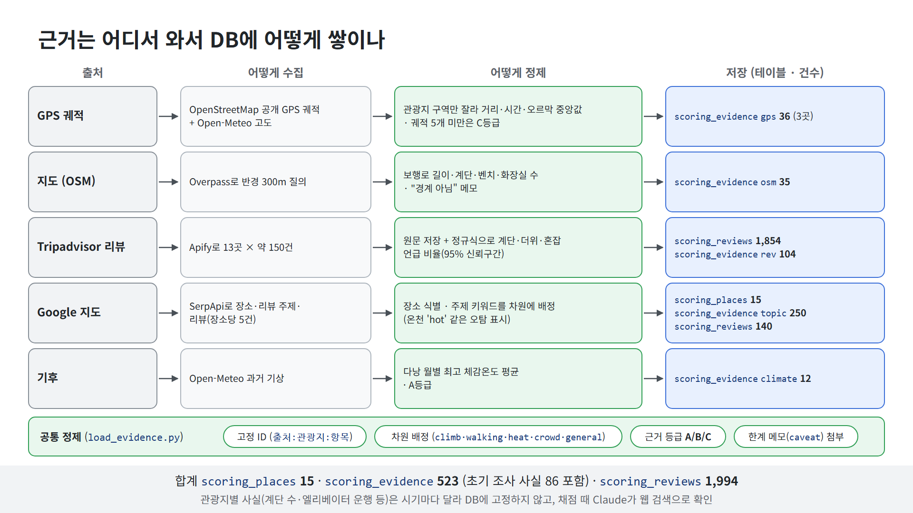
부록 A (Q&A용). 근거 수집·정제·저장. 합계 장소 15 · 근거 523(초기 조사 86 포함) · 리뷰 1,994.

부록 B (Q&A용). LLM 채점 → 코드 검증 → 코드 집계 → 사용. 틀리면 무효, 흔들리면 사람 검수.
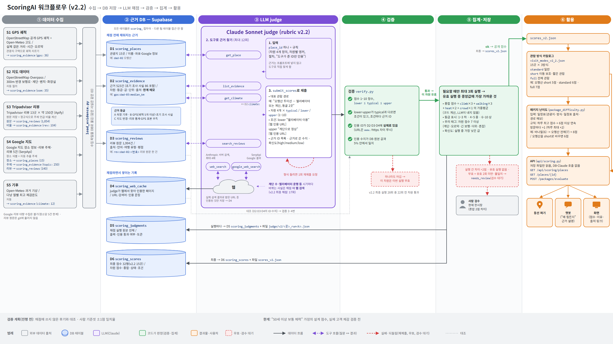
부록 C (Q&A용). ScoringAI v2.2 전체 구조. 글자가 작아 Q&A에서만 사용. 주의: 그림 속 "28회 중 22회"는 재채점 실행 28회(장소당 평균 1.9회) 중 전 차원 통과 22회이고, 7장 "14/15"는 15곳 중 공개 가능 곳 수라 단위가 다름. "하루 최대 +2"는 보너스 상한이고 7은 최고 점수와 합친 하루 난이도 상한. "현재 한시장"은 검수 대기 중인 실제 사례(13장에서는 뺌).
부록 D부모님용 여행지 소개 카드 · Q&A용
1일차 · 용다리 · 오행산 · 아시아파크
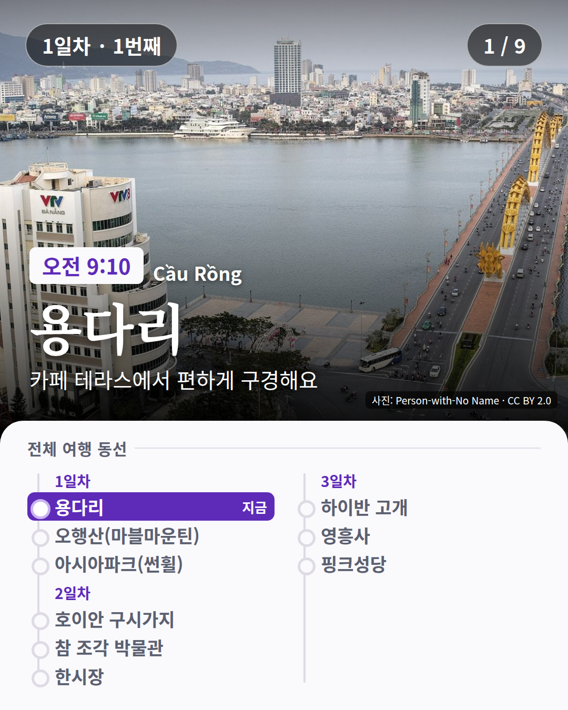
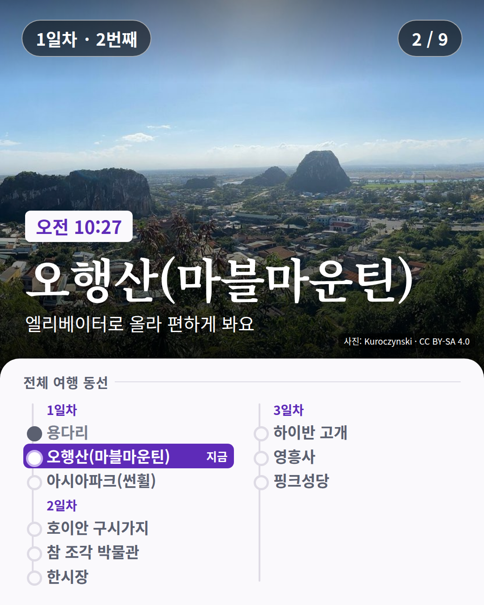
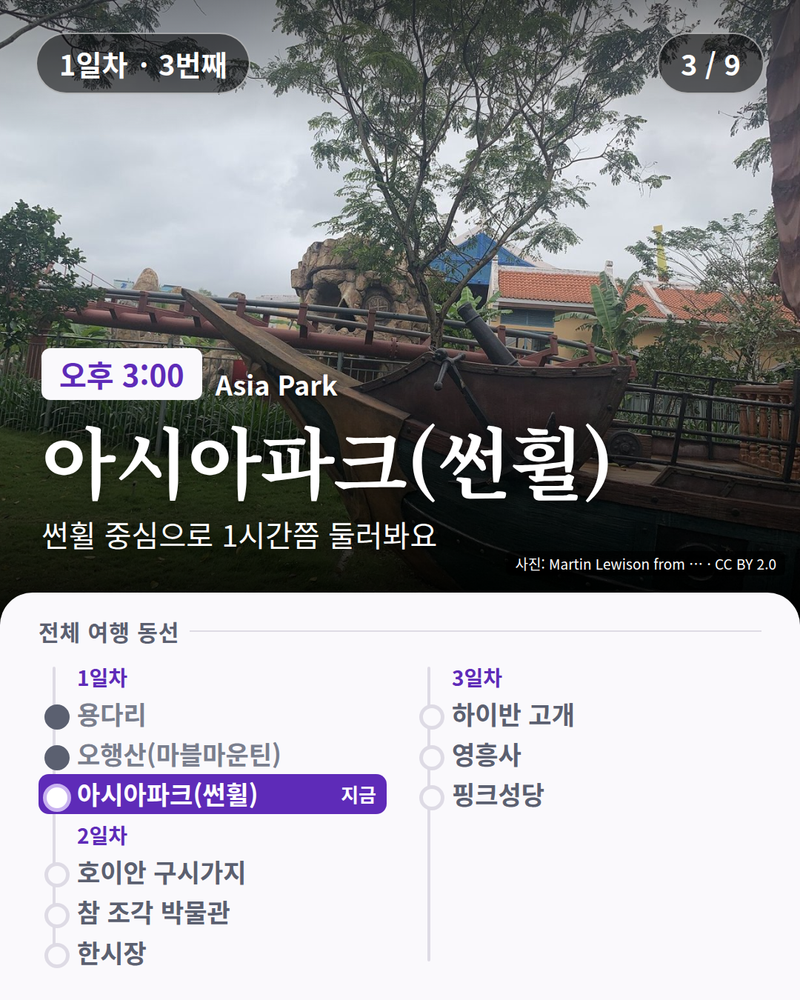
일정 엔진 실행 결과(final-path.json) 기반 · 식당·시각은 데모 데이터 · 사진 작가·라이선스는 카드에 표기
부록 D-1 (Q&A용). 카드 한 장은 여행지 1곳과 하단 전체 동선입니다. 카드 설명 문구는 채점 데이터의 "편하게 보는 방법"(짧은 관람)을 줄인 것이고, 일정 엔진은 모두 표준 관람으로 짰으므로 설명과 실제 관람 방식이 다를 수 있음. 한시장은 점수 검수 대기 상태.
부록 D부모님용 여행지 소개 카드 · Q&A용
2일차 · 호이안 구시가지 · 참 조각 박물관 · 한시장
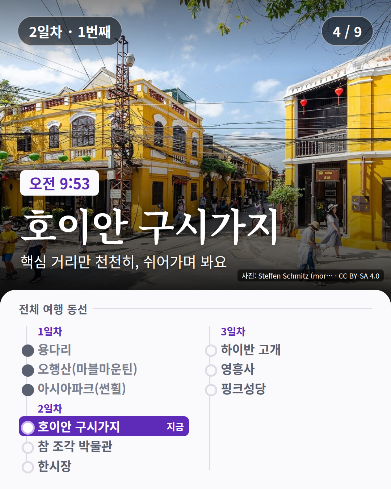
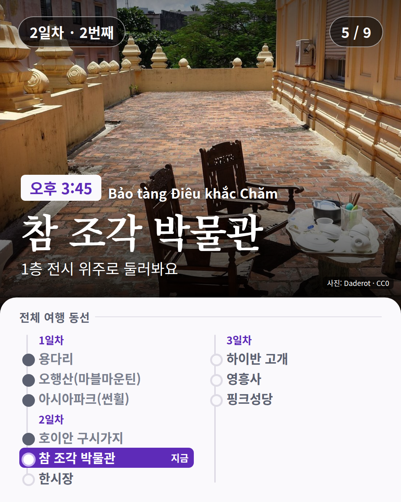
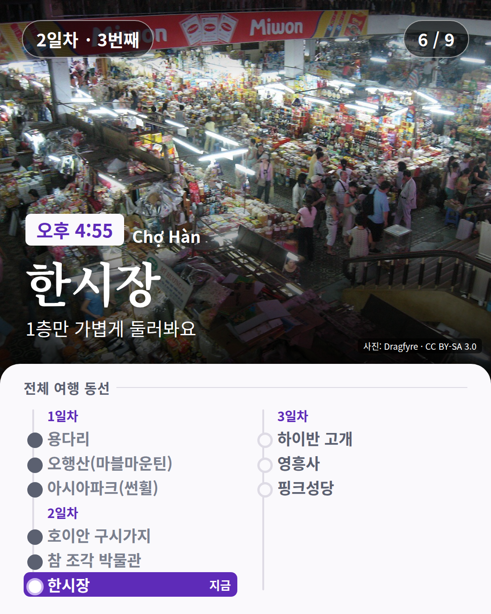
일정 엔진 실행 결과(final-path.json) 기반 · 식당·시각은 데모 데이터 · 사진 작가·라이선스는 카드에 표기
부록 D-2 (Q&A용). 카드 한 장은 여행지 1곳과 하단 전체 동선입니다. 카드 설명 문구는 채점 데이터의 "편하게 보는 방법"(짧은 관람)을 줄인 것이고, 일정 엔진은 모두 표준 관람으로 짰으므로 설명과 실제 관람 방식이 다를 수 있음. 한시장은 점수 검수 대기 상태.
부록 D부모님용 여행지 소개 카드 · Q&A용
3일차 · 하이반 고개 · 영흥사 · 핑크성당
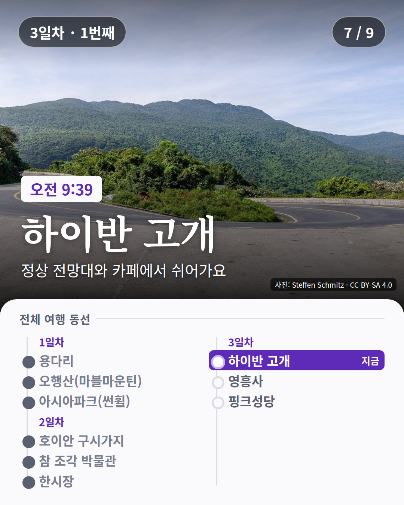
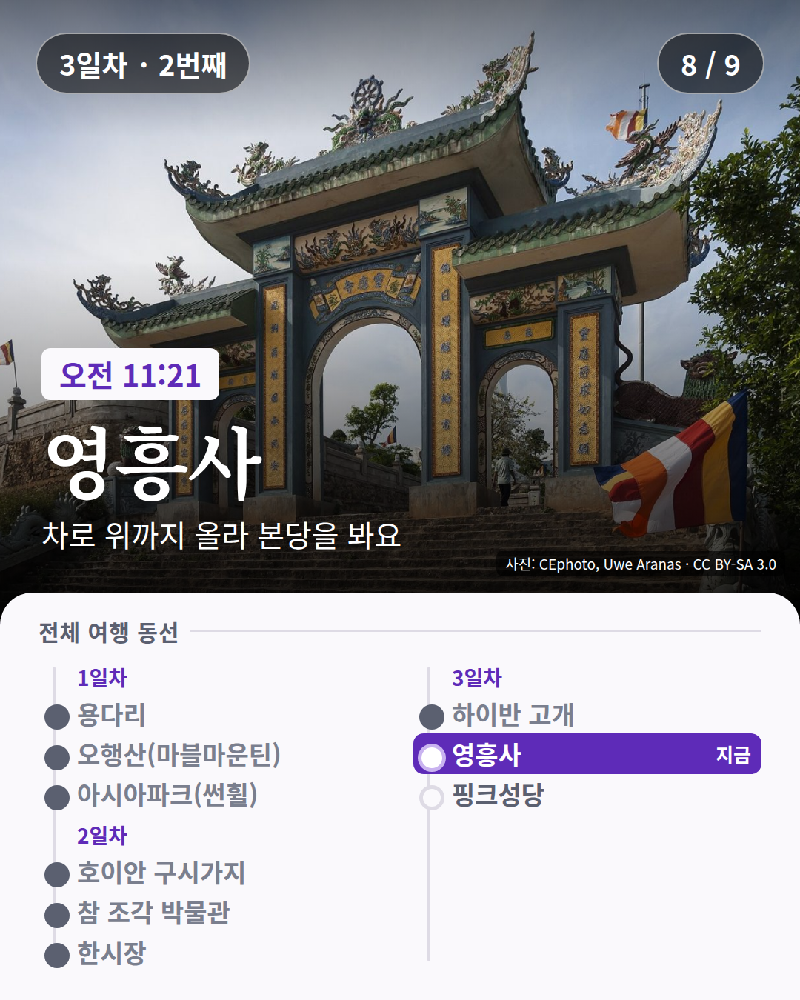
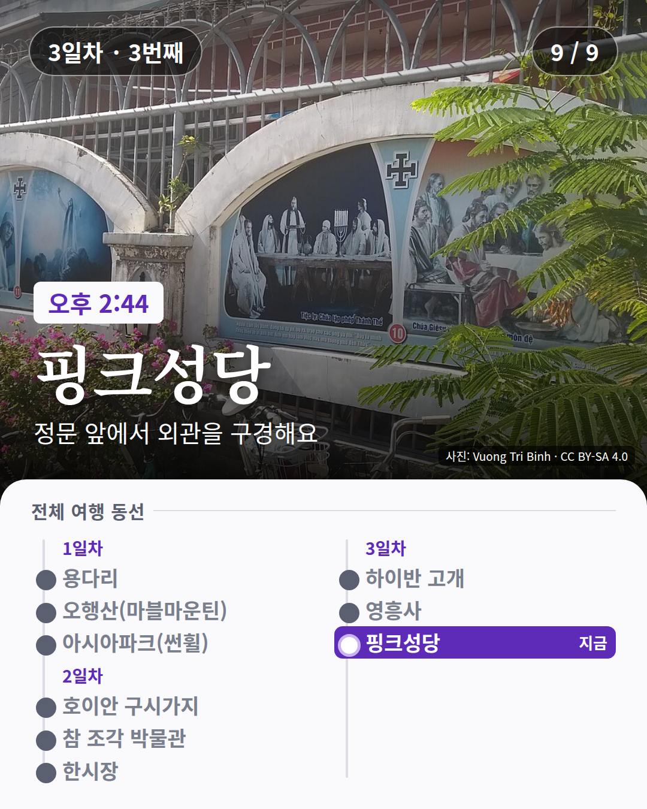
일정 엔진 실행 결과(final-path.json) 기반 · 식당·시각은 데모 데이터 · 사진 작가·라이선스는 카드에 표기
부록 D-3 (Q&A용). 카드 한 장은 여행지 1곳과 하단 전체 동선입니다. 카드 설명 문구는 채점 데이터의 "편하게 보는 방법"(짧은 관람)을 줄인 것이고, 일정 엔진은 모두 표준 관람으로 짰으므로 설명과 실제 관람 방식이 다를 수 있음. 한시장은 점수 검수 대기 상태.